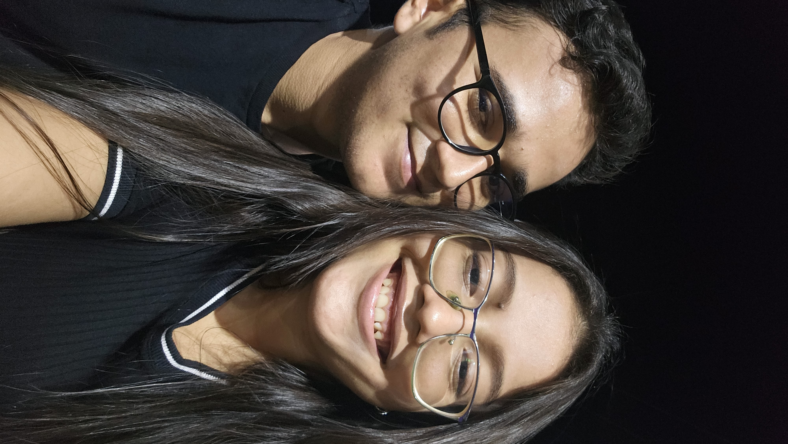

Alguns momentos nosso, espero que goste❤️
Esse dia da piscina foi muito bom, passamos muito tempo juntos, ficamos um tempo de molho na piscina conversando, enquanto os meninos brincavam de algo que não lembro. Lembro que o Vinícius ficava me chamando pra brincar e eu só falando 'bora, bora, bora' e não ia, kkk, não queria sair de perto de uma certa pessoa, não queria que aquele momento acabasse. Comemos muito também nesse dia, muita carne e farofa. Também tinha baião né kk, Levei dois quilos de baião e parece que sobrou dois quilos e meio, kkk. De alguma forma, o baião aumentou. Nesse dia, também passamos um momento no balanço, fomos todos para o balanço e depois o Dheysson ficou balançando nós muito alto. Um tempinho depois chegou a hora de todos se despedirem. O melhor momento da despedida foi o abraço, nos abraçamos e um tempinho veio outro abraço.
Nessa fotinha estávamos no Guaraná, comemorando um dia especial, meu aniversário. Estava fazendo 24 aninhos, o temido 24, kkk. Esse dia não foi uma comemoração como eu imaginei; queria que fosse diferente, em um ambiente diferente, e que tivesse outras pessoas também. Juntar todos os meus amigos sem intrigas. Apesar dos apesares, foi um dia muito bom. Tivemos um momento no Rota, comemos muita pizza, meu bem não gostou da minha pizza favorita do Rota, mas tudo bem né kkk. Foi muito bom estar com "todos" no Rota. Depois fomos para o Guaraná, onde tiramos essa fotinha linda e muitas outras. Também experimentei o sorvete kk. Estava esperando para tomar com meu bem, e até hoje (20/12/2023), não comi novamente. Talvez vou comer com meu bem de novo, assim espero.
Aqui estávamos no ginásio, assistindo aos jogos e esperando o resultado da gincana da sua escola. Nesse dia, demonstrei um pouco da minha linguagem de amor kk. Praticamente todas as vezes que ia falar com meu bem, eu ia lá e pegava no teu braço. Sou assim, né ?. Passamos muito tempo lá, sentadinhos e conversando, aproveitando os poucos momentos que temos juntos. Depois de um tempinho, fiquei lá, sentadinho e comportado igual a Marcelina, porque meu bem foi lá para cima dos assentos. Fiquei lá até o resultado, e a equipe do meu bem ficou em último. Acontece, kk. Meu bem foi até preparada de branco, porque parece que já sabia do resultado kk. Quando acabou, todos nós passamos em casa e ficamos um tempinho lá. Foi um dia inesquecível, e lembro sempre.
Deixo essa fotinha para registrar todos os momentos das nossas caminhadas. Amo nossas caminhadas, cada momento que passamos juntos nela, cada conversa, cada sorriso que damos juntos, nossos abraços, nossas corridinhas e as apostas de quem chega primeiro. Não consigo acompanhar essa mulher nunca, aff kk. É simplesmente incrível. Não quero que esses momentos acabem. Já fico ansioso para toda segunda, quarta e sexta, para poder caminhar com meu bem, e todas as vezes que chego na praça e vejo você de longe, pois conheço teu caminhar de longe, meu coração já acelera e fico com um sorrisinho no rosto, só de felicidade.
por fim, deixo esse lindo vídeo❤️